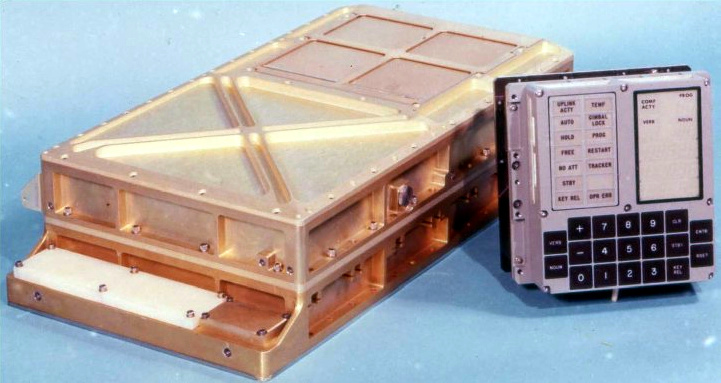

« Les circuits, c’est le grand moteur de l’électronique, de l’informatique. Sans les circuits il n’y en aurait pas ! C’est la progression des circuits qui permet le monde numérique. »
G. Berry, Collège de France, avril 2008.
En guise d'introduction, regardons les 10 premières minutes du cours Des circuits aux systèmes sur puces de Gérard Berry au Collège de France : https://www.college-de-france.fr/site/gerard-berry/course-2008-02-01-10h30.htm
Avant de parler des systèmes sur puce, un petit détour s'impose pour bien comprendre l'évolution des circuits, et donc des ordinateurs, au cours du temps.
C'est l'armée américaine qui a financé ce projet pour les besoins de son laboratoire de recherche en balistique. Ce sont six femmes qui sont les premières programmeuses de l'ENIAC, pour un calcul balistique.
Cet ordinateur était capable de réaliser 100 000 additions par seconde, mais ne pouvait gérer que 357 multiplications ou 38 divisions par seconde. Cette "puissance" de calcul lui a permi en 1949 de calculer 2000 décimales de $\pi$ en 70 heures.
Son poids est de 30 tonnes et il occupe la taille d'une maison individuelle. Sa consommation est de 150 kW : il faudrait la puissance électrique d'une vingtaine de maisons individuelles pour l'alimenter.
Le programme Apollo a contribué à l’essor de l’informatique : l'envoi d'hommes sur la lune a imposé une puissance de calcul importante dans un espace restreint. Cela a conduit à la conception de l'ordinateur AGC (pour Apollo Guidance Computer) que l'on retrouvait à la fois dans le module de commande et dans le module lunaire Apollo.
Source : Ressource Eduscol sur les circuits
Cet ordinateur effectue des traitements en temps réel, ce qui est révolutionnaire pour l'époque : il a été utilisé (en temps réel donc) par l'astronaute-pilote pour recueillir et fournir des informations de vol, et pour le contrôle automatique de toutes les fonctions de navigation du vaisseau spatial.

L'AGC à gauche et l'interface utilisateur à droite. Source : Wikimedia Commons
Cet ordinateur ne pèse que 32 kg et sa consommation électrique est suffisamment faible pour être embarqué dans une capsule spatiale fonctionnant sur batteries. Tout cela a été rendu possible grâce à l'utilisation de circuits intégrés, qui ont fait leur apparition en 1961.
La NASA a d'ailleurs acheté au début du programme 60 % de la production mondiale des circuits imprimés pour les besoins des ordinateurs des vaisseaux Apollo.
Le processeur est constitué de plus de 5000 portes NOR (on dit NON-OU en français) réalisées à l'aide de circuits intégrés. Voici une photo de l'une des portes NOR de l'AGC :

On voit bien sur l'une des pages du schéma (1/16) de l'AGC l'omniprésence des circuits NOR :
Sa mémoire de stockage (mémoire morte) est de 72 ko (soit 36 864 mots de 16 bits) et contenait à la fois les programmes et le système d'exploitation. Sa mémoire de travail (mémoire vive) est de seulement 4 ko. Le système d’exploitation pouvait exécuter six tâches simultanément et gérer l’éjection de tâches moins prioritaires s’il était surchargé.
L’AGC a été élaboré sous la supervision de l’équipe de Margaret Hamilton, qui se tient ci-dessous auprès du code du logiciel de navigation produit pour le programme Apollo en 1969.

En 1971, la société Intel crée et commercialise le premier microprocesseur : le 4004.

L'Intel 4004. Crédits : Thomas Nguyen, licence CC BY-SA 4.0, source : Wikimedia Commons
On parle de microprocesseur car c'est la première intégration de toutes les fonctionnalités d'un processeur sur un unique circuit intégré. On y retrouve les principaux constituants des processeurs (voir cours de Première sur Le modèle d'architecture d'un ordinateur si nécessaire) :
Schéma du microprocesseur Intel 4004. Source : Ressource Eduscol sur les circuits
Les dimensions du circuit intégré sont de 3,81 mm de long sur 2.79 mm de large, soit seulement 10,62 mm². Il comporte 2300 transistors et possède une puissance d'exécution de 92 600 opérations par seconde à une fréquence maximale de 740 kHz, soit une puissance comparable à celle de l'ENIAC.
Le 4004 d'Intel offre ainsi des performances équivalentes aux 66 m3 de l'ENIAC concentrées sur seulement 10 mm² !
Malgré une intégration plus grande, le microprocesseur 4004, comme tous les autres microprocesseurs, ne peut fonctionner seul : il doit être associé à des mémoires vives (pour les données non permanentes), des mémoires mortes (pour le(s) programme(s)), des gestionnaires d'entrées sorties, des horloges, etc. Le microprocesseur contrôle l'ensemble du fonctionnement et des échanges d'information en utilisant des liaisons appelées BUS. On obtient ainsi un système minimum pour obtenir un ordinateur :
Après la création du prmier micropocesseur en 1971, commence une course à l'intégration : concevoir et fabriquer des circuits de plus en plus petits contenant de plus en plus de transistors. Cette course est toujours d'actualité aujourd'hui !
Ainsi, en 1975 est apparu le premier microprocesseur bon marché permettant l'essor des ordinateurs personnels : le 6502 de MOS. C'est celui qui a équipé le tout premier ordinateur APPLE (l'APPLE 1).
Le site Visual 6502 permet de visualiser le fonctionnement interne de ce processeur lors de l'exécution d'un programme.
Ce système minimum, comme nous l’avons vu avec le processeur 4004, peut être réalisé en interconnectant plusieurs circuits sur une même carte. Les progrès de l’intégration permettront, un peu plus tard, d’intégrer l’ensemble de ce système minimum sur une seule puce, on parle alors de système sur puce, ou System on Chip soit SoC en anglais.
En 1975, Gordon Moore, l'un des trois fondateurs d'Intel, prédit que le nombre de transistors des microprocesseurs sur une puce de silicium allait doubler tous les deux ans. Cette extrapolation empirique se révèle finalement vraie puisqu'entre 1971 et 2001, la densité des transistors a doublé toutes les 1,96 années.

Croissance du nombre de transistors dans les microprocesseurs Intel.
Crédits : QcRef87, licence CC BY-SA 3.0, source :
Wikimedia Commons
Ainsi, de 2300 transistors pour l'Intel 4004 on est passé à des milliards de transistors désormais. Tout cela a été rendu possible grâce à la miniaturisation de la gravure sur les puces. Ces gravures étant maintenant gérées par des logiciels de CAO (conception assistée par ordinateur), on utilise des ordinateurs pour en fabriquer de nouveaux encore plus puissants. Cela fait dire à Gérard Berry que :
« L'informatique est une science qui s'invente elle-même. », G. Berry, Collège de France.
Cette augmentation exponentielle du nombre de transistors a pour conséquence que les machines électroniques sont devenues de plus en plus petites et de moins en moins coûteuses tout en devenant de plus en plus rapides et de plus en plus puissantes (nous allons y revenir !).

Les ordinateurs "de bureau" (PC) disposent d'une carte mère accueillant le microprocesseur (= CPU, caché sous un système de refroidissement), relié à de nombreux composant additionnels commes des disques durs, des cartes graphiques, des extentions mémoire, des cartes réseaux. Dans les cartes mères modernes, en particulier celles des ordinateurs portables, l'intégration est beaucoup plus poussée encore.
L'aboutissement de toute cette miniaturisation est l'intégration de ces composants sur une seule puce, comme c'est le cas de nos smartphones actuels !
Un SoC, pour System on Chip, accueille donc sur une même puce un microprocesseur (CPU), de la mémoire vive (RAM), un circuit graphique (GPU) et des composants WiFi, Bluetooth, etc. dans une taille très réduite.

Un smartphone intègre les mêmes composants qu'un PC (CPU, RAM, carte graphique, interfaces réseaux, etc.) mais sur une seule puce d'une centaine de mm² seulement !
On trouve sur cette puce les circuits suivants :
Un SoC. Source : support de la présentation de Gérard Berry.
Les smartphones sont donc des systèmes sur puce (= SoC) qui intègrent tout ce que la technologie peut nous apporter : un microprocesseur puissant, de la mémoire, des interfaces de communication rapides (4G, 5G, Wifi...), un contrôleur graphique (GPU) digne d'une console de jeu, tout cela fonctionnant sur batterie avec une durée de fonctionnement de plusieurs heures.
Voici des photos d'un iPhone 4S démonté. Comme vous le voyez, le nombre de composants est très réduit au regard des fonctionnalités. La puce principale SoC est la puce A5.
Un iPhone 4S démonté. Crédits : Cours de Olivier Lécluse sur les SoC.
D'autres exemples de SoC sont abordés dans les exercices.
Le premier avantage évident des SoC est leur taille réduite. Mais cette réduction de la taille s'accompagne d'autres avantages très intéressants :
Tous ces avantages font que désormais des grands constructeurs, comme Apple, souhaite en équiper toute leur gamme d'ordinateurs.
Les SoC sont pour le moment moins performants que les ordinateurs de bureau "haut de gamme" et ne peuvent pas être personnalisés, mais le principal inconvénient des SoC est qu'une défaillance quelconque d'un composant nécessite le remplacement complet du SoC.
Références :
Germain BECKER, Lycée Mounier, ANGERS
Ressource éducative libre distribuée sous Licence Creative Commons Attribution - Pas d’Utilisation Commerciale - Partage dans les Mêmes Conditions 4.0 International